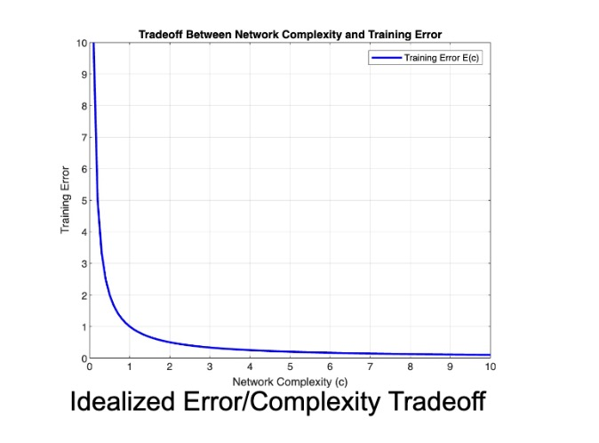
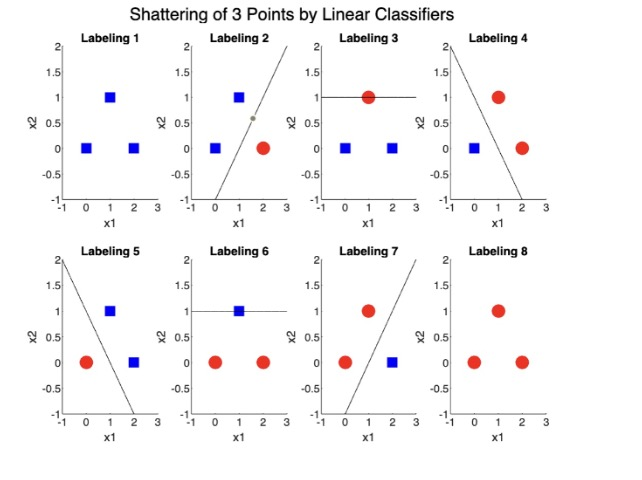
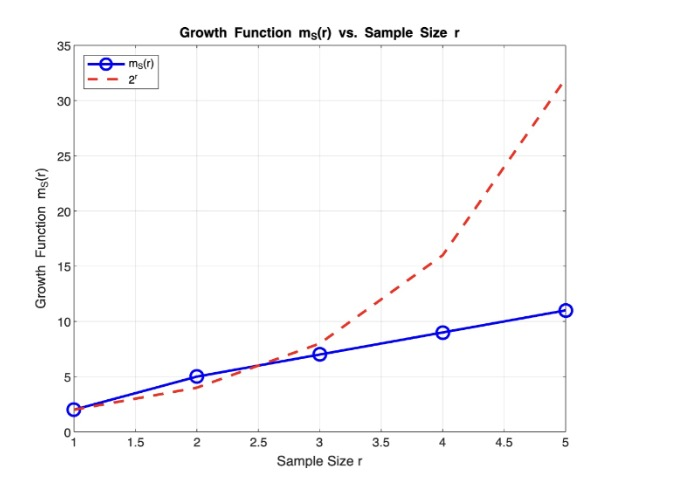
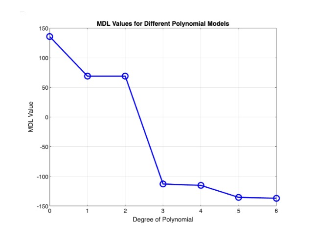

Optimal Brain Damage
Annotated by: Noah Schliesman
Published on: by Yann Le Cun, John Denker, and Sara Solla
Abstract
“I used to have a concussion once, but I can’t remember if it was funny or not”
~Some Wise Internet User
Here we discuss VC dimensionality, shattering and the growth function, description length, saliency, gating coefficients, Taylor Series expansion of the change in loss function, second derivative computation, backpropagation
Removing unimportant weights from a network leads to better generalization, fewer required training data, and improved speed of learning. This is largely due to reduced overfitting, effective feature utilization, and faster computation. Second-derivative information provides insight into the tradeoff between network complexity and training set error, particularly in analyzing the curvature of the loss function (CDS89).
Let \( E(c) \) be the error as a function of complexity \( c \). Our objective function is then:
\[ f(c) = E(c) \cdot c \]
We can find critical points via first derivative analysis:
\[ E(c) + c \frac{\delta E(c)}{\delta c} = 0 \]
We confirm minima via second derivative analysis:
\[ \text{sign} \left( \frac{\delta^2 E(c)}{\delta c^2} + c \frac{\delta^2 E(c)}{\delta c^2} \right) < 0 \]
These equations help identify the optimal level of complexity that minimizes the error while avoiding overfitting.
Let’s start our basic model using an inverse relationship between complexity and error. As the complexity of our model approaches zero, the error approaches infinity. Ideally, as complexity tends to infinity, error approaches zero.

Note that this tradeoff is more complicated as increasing complexity initially decreases error until overfitting causes error to explode.
Introduction
Selectively deleting half (or more) weights can improve generalization and reduce overfitting. The authors briefly introduce Vapnik-Chervonekis (VC) dimensionality and description length as a way to measure network complexity (CDS89).
Deleting unimportant weights reduces a network's VC dimension and description length. These redundant weights potentially learn noise in the training data, leading to overfitting.
Optimal Brain Damage (OBD) is analogous to the taste palette of a child, who only desires certain foods that their neurons are trained for. By removing these interdependencies, the network can generalize to a broader 'taste,' much like a child expanding their palate.
In 1971, the paper, "On the Uniform Convergence of Relative Frequencies of Events to their Probabilities" by Vapnik and Chervonenkis, established sufficient conditions for the uniform convergence of empirical probabilities to their true probabilities. These conditions are quantified in terms of the Vapnik-Chervonenkis (VC) dimension, a measure of the complexity of the hypothesis space. The VC dimension plays a crucial role in understanding the generalization ability of a learning algorithm (VC71).
Let \( H \) be a hypothesis space, and let \( S = \{x_1, x_2, ..., x_n\} \) be a set of \( n \) points. The set \( S \) is said to be shattered by \( H \) if for every possible binary labeling of \( S \), there exists a hypothesis \( h \in H \) such that \( h \) correctly classifies all points in \( S \) according to the given labeling. More formally,
\[ \forall c: S \to \{0, 1\}, \exists h \in H \text{ s.t. } \forall x_i \in S, h(x_i) = c(x_i) \]
Shattering provides a way to measure the expressive power of the hypothesis space. If a set of \( n \) points can be shattered by \( H \), the hypothesis space holds enough complexity to express any pattern and so the largest \( n \) for which \( S \) can be shattered by \( H \) is the VC dimension of \( H \).
We can first illustrate shattering using a simple MATLAB graph of three points using linear classifiers as our hypothesis space to separate them.

So how do we measure the number of distinct ways a set of \( r \) points can be labeled \( H \)? The growth function \( m_S(r) \) is defined as:
\[ m_S(r) = \max_{X \subseteq X, |X|=r} A_S(X) \]
Here, \( X \subseteq S \) is the set of possible samples, \( r \) is the sample size, and \( A_S(X) \) is the count of distinct labelings (subsamples) that the hypothesis space can induce on \( S \). When the growth function reaches its maximum value, \( 2^r \), it indicates that the set of potential points are shattered.
We can implement our growth function for the linear classification example, and compare to the theoretical maximum:

In 1989, the paper “Modern Selection based on Minimum Description Length” formulated a way to measure stochastic complexity. The Minimum Description Length (MDL) Principle states that the best hypothesis for a given set \( S \) is the one that leads to the shortest overall description (G89).
Mathematically, we say that the description length of the hypothesis \( L(h) \) depends on the number of parameters for a polynomial of degree \( d \) for a set of data \( S \).
\[ L(h) = (d + 1) \log_2 (\max(x) - \min(x)) \]
We can define residuals as the errors between the observed and predicted data. We can formulate the description length of the data given the hypothesis \( L(S|h) \), assuming the residuals have a Gaussian distribution. For a number of data points \( |S| = n \), variance of the residuals \( \sigma^2 \), observed data points \( y_i \), and predicted data points \( \hat{y_i} \), we can model the description length of the data given the hypothesis.
\[ L(S|h) = \frac{n}{2} \log_2 (2 \pi \sigma^2) + \frac{1}{2 \sigma^2} \sum_{i=1}^{n} (y_i - \hat{y_i})^2 \]
The total MDL is then just:
\[ MDL = \arg \min_d (L(h) + L(S|h)) \]
We can illustrate this using a noisy sine wave, of which we consider polynomial models from degrees 0 to 6. For each polynomial degree, we fit the polynomial to the data, calculate \( MDL \), and plot the data.

While VC dimensionality and description length can be useful measures of complexity, the authors choose to determine complexity based on free parameters (CDS89).
Free parameters provide a capacity to fit the data by quantifying the number of adjustable elements in the model and therefore learn more complex patterns at the risk of overfitting. In neural networks, these parameters consist of the weights and biases that hold expressive power.
Saliency is a measure of how the deletion of free parameters affects the training error. After deleting parameters with small saliency, we retrain the network. The authors compare this procedure to that of continuous weight decay, where weights are gradually reduced during training. Small-saliency parameters are disproportionately decayed, similar to iterative pruning but in a continuous manner (CDS89).
Rather than knocking out low-saliency weights in discrete time, it makes sense that we use a continuous approach to avoid abrupt changes leading to learning inconsistencies. Similarly gating coefficients are parameters that can increase or decrease the influence of certain weights or neurons, typically learned during training.
We can use the first and second derivative analysis described above to compute parameter saliencies.
Optimal Brain Damage
Again, recall that saliency of a parameter \( u_i \) is the change in the objective function \( E \) caused by deleting that parameter. A perturbation in the parameter vector \( U \) will change the objective function \( E \). We use Taylor Series expansion to make this procedure computationally feasible. Let there be individual parameter change \( \delta u_i \in \delta U \), gradient components \( g_i = \frac{\delta E}{\delta u_i} \) and Hessian components \( h_{ij} = \frac{\delta^2 E}{\delta u_i \delta u_k} \) (CDS89). Similarly, let the higher-order terms in the Taylor Series expansion of the objective function be denoted by \( O(||\delta U||^3) \). The change in objective function is then:
\[ \delta E = \sum_i g_i \delta u_i + \frac{1}{2} \sum_i h_{ij} \delta u_i^2 + \frac{1}{2} \sum_{i \neq j} h_{ij} \delta u_i \delta u_j + O(||\delta U||^3) \]
When we compress this formula, we obtain an intuition for the change in objective function, which illustrates the chain rule applied to a Taylor Series:
\[ \delta E = \sum_i \delta E + \frac{1}{2} \sum_i \frac{\delta^2 E}{\delta u_i \delta u_k} + \frac{1}{2} \sum_{i \neq j} \frac{\delta^2 E}{\delta u_i \delta u_j} + O(||\delta U||^3) \]
The approach is to find the set of parameters with the smallest saliencies. Due to the computational cost of this Taylor Series expansion, the authors apply three different types of approximation.
- Diagonal simplification assumes each parameter independently affects the objective function. Mathematically this means that \( \frac{1}{2} \sum_{i \neq j} h_{ij} \delta u_i \delta u_j = 0 \), or,
- Extremal simplification assumes that the parameter deletion will be performed after the training process has converged, meaning that the parameter vector \( U \) is at a local minimum of the objective function \( E \). In other words, \( \sum_i g_i \delta u_i = \sum_i \delta E = 0 \). Now our model becomes,
- Quadratic approximation assumes that the objective function \( E \) can be approximated by a quadratic function, and higher order Taylor Series coefficients can be discarded. This means that
\[ \delta E = \sum_i g_i \delta u_i + \frac{1}{2} \sum_i h_{ij} \delta u_i^2 + O(||\delta U||^3) \]
\[ \delta E = \frac{1}{2} \sum_i h_{ij} \delta u_i^2 + O(||\delta U||^3) \]
\[ O(||\delta U||^3) \approx 0 \], so,
\[ \delta E \approx \frac{1}{2} \sum_i h_{ij} \delta u_i^2 \]
The authors use mean-squared error (MSE) as the objective function. Outlining backpropagation, they define a basic neural network, where \( x_i \) is a unit state, \( a_i \) is the total input, \( f \) is the squashing function (activation function), and \( w_{ij} \) is the weight between connections.
\[ x_i = f(a_i) \text{ and } a_i = \sum_j w_{ij} x_j \]
They use a shared-weight network, of which controls multiple connections using a single parameter \( u_k \).
When \( (i,j) \in V_k \) are the index pairs, the diagonal terms of the Hessian are just:
\[ h_{kk} = \sum_{(i,j) \in V_k} \frac{\delta^2 E}{\delta w_{ij}^2} \]
Resulting from the network structure, we can describe our diagonal Hessian terms with respect to the objective function, total input, and unit state,
\[ h_{kk} = \sum_{(i,j) \in V_k} \frac{\delta^2 E}{\delta a_i^2} x_j^2 \]
We can expand the second derivative of the objective function with respect to the total input using backpropagation:
\[ \frac{\delta^2 E}{\delta a_i^2} = f'(a_i)^2 \sum_l w_{li}^2 \frac{\delta^2 E}{\delta a_l^2} - f''(a_i) \frac{\delta E}{\delta x_i} \]
We also need to note the boundary condition at the last output layer:
\[ \frac{\delta^2 E}{\delta a_i^2} = 2f'(a_i)^2 - 2 (d_i - x_i) f''(a_i) \]
Levenberg-Marquardt Approximation entails that \( f''(a_i) = 0 \), and therefore:
\[ \frac{\delta^2 E}{\delta a_i^2} \approx 2f'(a_i)^2 \]
Which in turn guarantees positive estimates of the second derivative.
The OBD procedure consists of choosing a network architecture, train until obtaining a reasonable solution, compute the Hessian \( h_{kk} \) for each parameter, computing saliencies for each parameter \( s_k = \frac{1}{2} h_{kk} u_k^2 \), and deleting low saliency parameters after sorting.
It can be suitable to decrease low-saliency parameters instead of setting them to 0.
The authors obtained revolutionary data using backpropagation applied to handwritten digit recognition using this saliency technique. They used only 2578 free parameters with 105 connections, using a 74:26 train/test split.
They also note that as the number of deleted parameters increases, the number of interactions \( h_{ij} \delta u_i \delta u_j \) increases. When larger-valued parameters are deleted, the higher order effects \( O(||\delta U||^3) \) are less negligible.
When we delete a large number of parameters, it could be useful to approximate the number of interactions. Similarly, deleting large-valued parameters means we should consider the higher order effects.
Conclusion
The authors were able to achieve excellent performance by reducing the number of parameters by a factor of four using saliency, leading to better generalization and reduced redundancy. Second-derivative information allows us to measure complexity beyond the number of free parameters, but rather a measure of the network's information content.
For MATLAB code, please reach out: